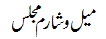

Urdu Audio Lectures by Shaykh Shakeel Ahmed Naqshbandi (db)
Melvisharam Monthly Majlis
| Date | Melvisharam Monthly Majlis - URDU Lectures |
Download | |
| MP3 Lectures | |||
| 28.10.2024 | Melvisharam Majlis - (86) |
 |
|
| 26.08.2024 | Melvisharam Majlis - (85) | ||
| 28.05.2024 | Melvisharam Majlis - (84) | ||
| 29.04.2024 | Melvisharam Majlis - (83) | ||
| 26.02.2024 | Melvisharam Majlis - (82) | ||
| 29.01.2024 | Melvisharam Majlis - (81) | ||
| 25.12.2023 | Melvisharam Majlis - (80) | ||
| 27.11.2023 | Melvisharam Majlis - (79) | ||
| 30.10.2023 | Majlis (78): Mahana Majlis - ماہانہ مجلس | ||
| 25.09.2023 | Majlis (77): Seerat un Nabi SA - سیرت النبی ﷺ | ||
| 28.08.2023 | Melvisharam Majlis - (76) | ||
| 31.07.2023 | Majlis (75): Maqam e Tasleem wa Raza - مقام تسلیم و رضا | ||
| 26.06.2023 | Majlis (74): Maqam e Tafweez - مقام تفویض | ||
| 29.05.2023 | Majlis (73): Maqam e Tawakkul - مقام توکل | ||
| 20.03.2023 | Majlis (73): Maqam e Shukr - مقام شکر | ||
| 27.02.2023 | Majlis (72): Maqam e Sabr - مقام صبر | ||
| 30.01.2023 | Majlis (71): Maqame Wara Wa Taqwa - مقام ورع وتقوی | ||
| 26.12.2022 | Majlis (70): Maqame Mujaheda - مقام مجاہدہ | ||
| 28.11.2022 | Majlis (69): Maqam e Zohd -- مقام زہد | ||
| 31.10.2022 | Majlis (68): Maqamat e Sulook -- مقامات سلوک | ||
| 26.09.2022 |
Majlis (67): Allah Ka Wali Kaon; by Hazrat Mufti Khursheed Anwar Sb Naqshbandi db |
||
| 29.08.2022 | Melvisharam Majlis - (66) | ||
| 25.07.2022 |
Majlis (65) - Shariat ke Ahkam par Amal Karne men he Zindagi hai |
||
| 27.06.2022 | Majlis (64) - Emaan ki Hifazat | ||
| 30.05.2022 |
Majlis (63) - Deeni Sha'aer Ki Tazeem Bahut Zaroori hai |
||
| 28.02.2022 | Melvisharam Majlis - (62) | ||
| 31.01.2022 | Melvisharam Majlis - (61) | ||
| 27.12.2021 | Melvisharam Majlis - (60) | ||
| 29.11.2021 | Melvisharam Majlis - (59) | ||
| 30.08.2021 | Melvisharam Majlis - (58) | ||
| 28.06.2021 | Melvisharam Majlis - (57) | ||
| 28.12.2020 | Melvisharam Majlis - (56) | ||
| 30.11.2020 | Melvisharam Majlis - (55) | ||
| 26.10.2020 | Melvisharam Majlis - (54) | ||
| 28.09.2020 | Melvisharam Majlis - (53) | ||
| 29.06.2020 | Melvisharam Majlis - (52) | ||
| 24.02.2020 | Melvisharam Majlis - (51) | ||
| 30.12.2019 | Melvisharam Majlis - (50) | ||
| 28.10.2019 | Melvisharam Majlis - (49) | ||
| 30.09.2019 | Melvisharam Majlis - (48) | ||
| 26.08.2019 | Melvisharam Majlis - (47) | ||
| 29.07.2019 | Melvisharam Majlis - (46) | ||
| 24.06.2019 | Melvisharam Majlis - (45) | ||
| 25.03.2019 | Melvisharam Majlis - (44) | ||
| 25.02.2019 | Melvisharam Majlis - (43) | ||
| 28.01.2019 | Melvisharam Majlis - (42) | ||
| 31.12.2018 | Melvisharam Majlis - (41) | ||
| 26.11.2018 | Melvisharam Majlis - (40) | ||
| 29.10.2018 | Melvisharam Majlis - (39) | ||
| 24.09.2018 | Melvisharam Majlis - (38) | ||
| 27.08.2018 | Melvisharam Majlis - (37) | ||
| 30.07.2018 | Melvisharam Majlis - (36) | ||
| 30.04.2018 | Melvisharam Majlis - (35) | ||
| 26.03.2018 | Melvisharam Majlis - (34) | ||
| 26.02.2018 | Melvisharam Majlis - (33) | ||
| 29.01.2018 | Melvisharam Majlis - (32) | ||
| 25.12.2017 | Melvisharam Majlis - (31) | ||
| 27.11.2017 | Melvisharam Majlis - (30) | ||
| 30.10.2017 | Melvisharam Majlis - (29) | ||
| 25.09.2017 | Melvisharam Majlis - (28) | ||
| 28.08.2017 | Melvisharam Majlis - (27) | ||
| 31.07.2017 | Melvisharam Majlis - (26) | ||
| 29.05.2017 | Melvisharam Majlis - (25) | ||
| 24.04.2017 | Melvisharam Majlis - (24) | ||
| 27.03.2017 | Melvisharam Majlis - (23) | ||
| 27.02.2017 | Melvisharam Majlis - (22) | ||
| 30.01.2017 | Melvisharam Majlis - (21) | ||
| 25.04.2016 | Melvisharam Majlis - (20) | ||
| 28.03.2016 | Melvisharam Majlis - (19) | ||
| 26.10.2015 | Melvisharam Majlis - (18) | ||
| 26.01.2015 | Melvisharam Majlis - (17) | ||
| 29.12.2014 | Melvisharam Majlis - (16) | ||
| 24.11.2014 | Melvisharam Majlis - (15) | ||
| 27.10.2014 | Melvisharam Majlis - (14) | ||
| 04.08.2014 | Melvisharam Majlis - (13) | ||
| 26.05.2014 | Melvisharam Majlis - (12) | ||
| 29.09.2014 | Melvisharam Majlis - (11) | ||
| 25.08.2014 | Melvisharam Majlis - (10) | ||
| 16.06.2014 | Melvisharam Majlis - (9) | ||
| 28.04.2014 | Melvisharam Majlis - (8) | ||
| 31.03.2014 | Melvisharam Majlis - (7) | ||
| 24.02.2014 | Melvisharam Majlis - (6) | ||
| 27.01.2014 | Melvisharam Majlis - (5) | ||
| N/A | Melvisharam Majlis - (4) | ||
| N/A | Melvisharam Majlis - (3) | ||
| N/A | Melvisharam Majlis - (2) | ||
| N/A | Melvisharam Majlis - (1) | ||
Weekly Tarbiyati Majlis
| Date | Weekly Majlis - URDU Lectures |
Download |
| MP3 Lectures | ||
| 26.07.2020 | Weekly Majlis [09] - Qurb e Qayamat ke Is Purfitan Daor Mein ~~Imaan ki Hifazat ke Liye~~ | |
| 19.07.2020 | Weekly Majlis [08] - Qurb e Qayamat ke Is Purfitan Daor Mein ~~Imaan ki Hifazat ke Liye~~ | |
| 12.07.2020 | Weekly Majlis [07] - Qurb e Qayamat ke Is Purfitan Daor Mein ~~Imaan ki Hifazat ke Liye~~ | |
| 05.07.2020 | Weekly Majlis [06] - Qurb e Qayamat ke Is Purfitan Daor Mein ~~Imaan ki Hifazat ke Liye~~ | |
| 28.06.2020 | Weekly Majlis [05] - Qurb e Qayamat ke Is Purfitan Daor Mein ~~Imaan ki Hifazat ke Liye~~ | |
| 21.06.2020 | Weekly Majlis [04] - Qurb e Qayamat ke Is Purfitan Daor Mein ~~Imaan ki Hifazat ke Liye~~ | |
| 14.06.2020 | Weekly Majlis [03] - Qurb e Qayamat ke Is Purfitan Daor Mein | |
| 07.06.2020 | Weekly Majlis [02] - Qurb e Qayamat ke Is Purfitan Daor Mein | |
| 31.05.2020 | Weekly Majlis [01] - Qurb e Qayamat ke Is Purfitan Daor Mein | |
NOTE: To download audio (mp3) files. Right click on download
( )
image and Click on Save Target As...
)
image and Click on Save Target As...